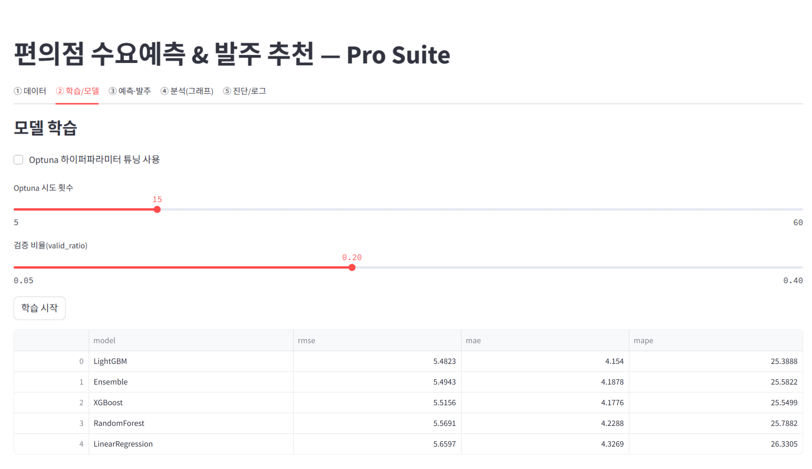
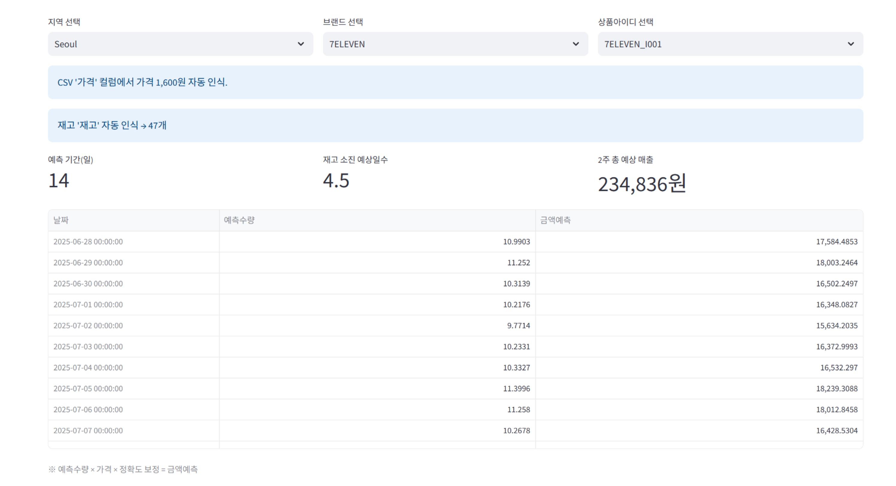
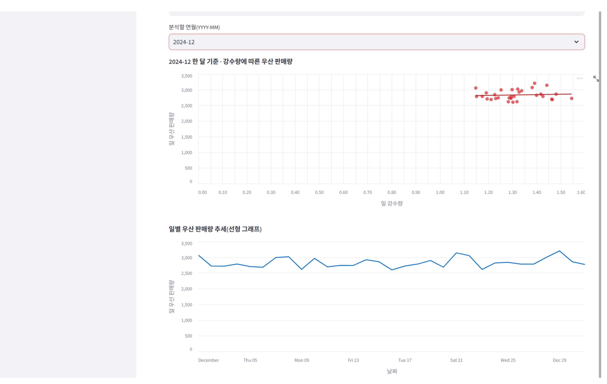

편의점 및 리테일 매장의 수요 예측과 발주 추천 기능을 통합한 Pro 버전 대시보드 및 머신러닝 기반 데이터 분석 프로젝트입니다.
프로그램 내에서 필요한 데이터를 다운로드하고 머신러닝 모델을 학습시켜, 예측 결과를 시각화하였습니다.
또한 지역과 날짜 데이터를 기반으로 편의점 상품 수요량을 계산하고 발주일과 소진 일수를 예측하며,
월별 우산 및 군고구마 판매량 데이터를 그래프로 나타내면서 계절에 따른 소비 패턴을 직관적으로 확인할 수 있도록 구성하였습니다.